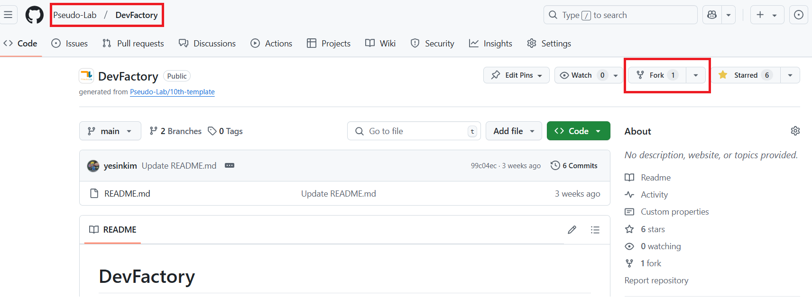
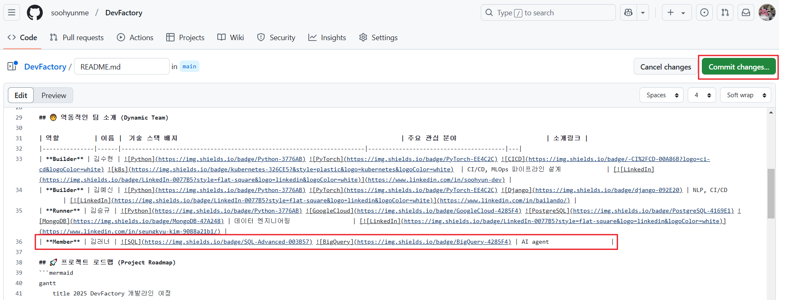
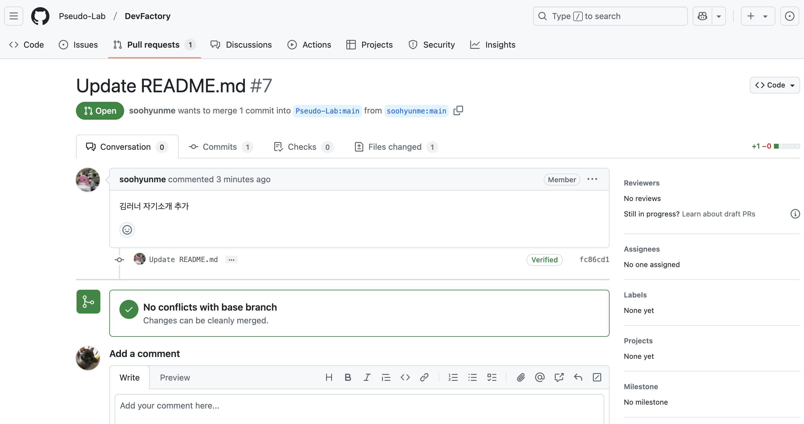

GitHub 저장소 프로필 업데이트하기#
1. Pull Request(PR) 소개#
Pull Request(PR) 는 저장소에서 변경 사항을 제안하고 다른 사람들과 협업하는 방법입니다. PR을 통해 코드를 병합하기 전에 코드 검토를 받을 수 있습니다. 프로필을 업데이트하는 방법을 통해 Pull Request 사용법을 익혀보겠습니다.
2. 저장소 Fork#
Git을 설치하지 않은 경우 다음 내용을 참고해서 설치하시면 됩니다.
저장소 포크(Fork)#
GitHub에서 저장소로 이동합니다.
오른쪽 상단의 Fork 버튼을 클릭합니다. 
Create fork 버튼을 클릭합니다.

3. 프로필 내용 추가하기#
포크가 완료된 저장소에서 가장 상위에 있는 README.md 파일을 열고, 프로필 부분에 대한 부분을 찾습니다.
(포크가 완료된 저장소는 본인 Github repository에 존재합니다.)

프로필 코드 한줄을 복사하고 본인 프로필에 맞게 내용을 수정하시면 됩니다.

내용 변경 후 Commit changes… 버튼을 클릭합니다. 
Badge 만들기#
새로운 Badge(Icon)을 생성하려면 다음 사이트를 참고해서 추가하시면 됩니다. https://shields.io/
4. 변경 사항 스테이징 및 커밋 + 변경 사항을 GitHub에 푸시#
다음처럼 commit 메시지와 description을 작성하고, Commit changes 버튼 클릭

커밋 및 Push가 완료되면, Fork한 저장소에서 다음과 같이 내용이 업데이트 됩니다.

5. Pull Request 생성#
현재 공용으로 사용하는 저장소에는 수정 사항이 반영되지 않았으므로 PR을 생성해야 합니다.
같은 화면에서 다음과 같이 Contribute 버튼 클릭 -> Open pull request 버튼 클릭

내용을 모두 작성한 뒤 Create pull request 버튼을 클릭합니다.

6. PR 리뷰 및 업데이트#
다음과 같이 PR이 생성되면, 팀원들이 변경된 코드를 검토한 뒤 문제가 없을시 승인합니다. 
7. Pull Request 병합#
PR이 승인되면 다음 단계로 병합할 수 있습니다.
GitHub에서 Merge Pull Request 버튼 클릭.
더 이상 필요하지 않은 경우 브랜치를 삭제합니다.
이제 프로필 업데이트가 완료되었습니다!